Maxime Poli
Master's degree student at École des Ponts ParisTech
Movie genre classification based on posters
In this project, I worked with other students from my department at the École des Ponts and with data scientists from Warner Bros. to build a model to classify movies according to their genre based on their poster. Posters usually follow certain codes, and one can often guess the genre of a movie using only the poster.
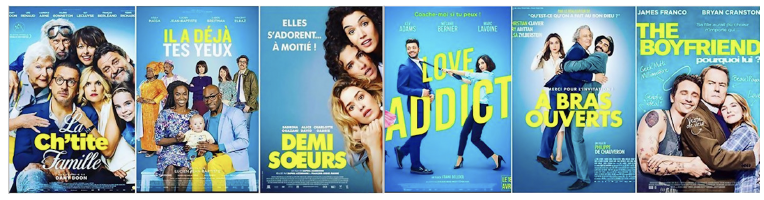
Some french posters of comedies
Given the database we had, we kept 7 genres (Animation, Action, Comedy, Dramatic Comedy, Documentary, Drama, Thriller), with one unique genre per film. We had at the end 4900 posters evenly distributed. We used data augmentation to increase the diversity of the training set, by applying random transformations such as image rotation, cropping, or adjust the hue of images by a random factor.
The approach that turned out to work the best was to use a ResNet-18 pre-trained on ImageNet and replace the layer used to give a prediction among the classes from ImageNet by a layer with an output of size 7 (our 7 genres). We then trained only this layer on our training dataset by keeping the rest of the weights of the network frozen. When we saw that the performance stopped increasing, we fine-tuned the whole model by gradually unfreezing a few of the top layers.
In the end, we acheived a 0.45 global accuracy. What’s interesting is the difference in performance according to the genre of the film.
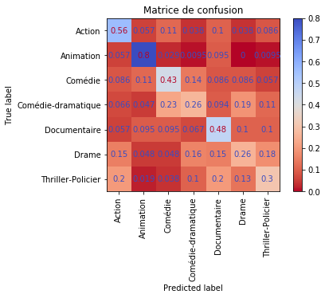
Confusion Matrix: for each true label, one can see the distribution of the predictions. The ideal matrix would be the identity matrix.
We can see that the model does really well for Animation (with a 0.8 accuracy), but has a hard time for Dramatic Comedy or Drama (both 0.26 accuracy). It is the same kind of behavior that for us; and if we look closely to the results on the testing set it is becoming clear where the model can make a mistake.
If we look at the Animation movies of the testing set that were predicted as such with the strongest confidence, we can easily see what makes a poster of an Animation movie.
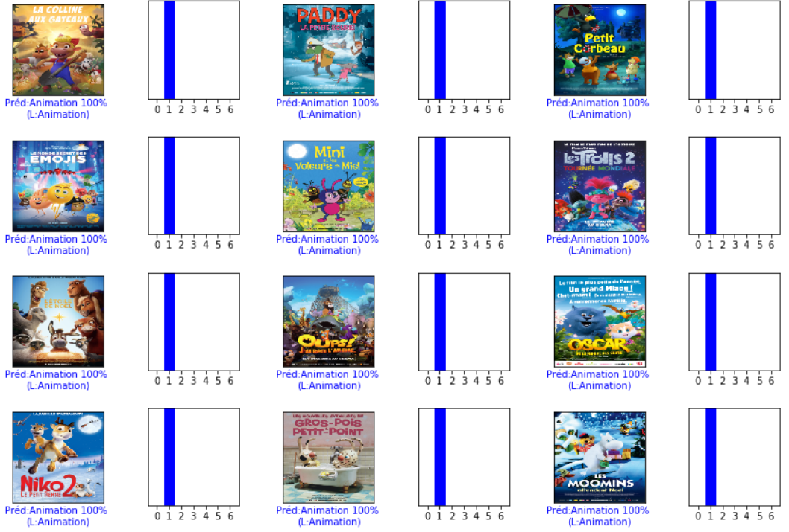
However, the Animation movies that had the worst prediction would have been a lot harder for us to guess correctly, if it was not for the drawn aspect of the poster.
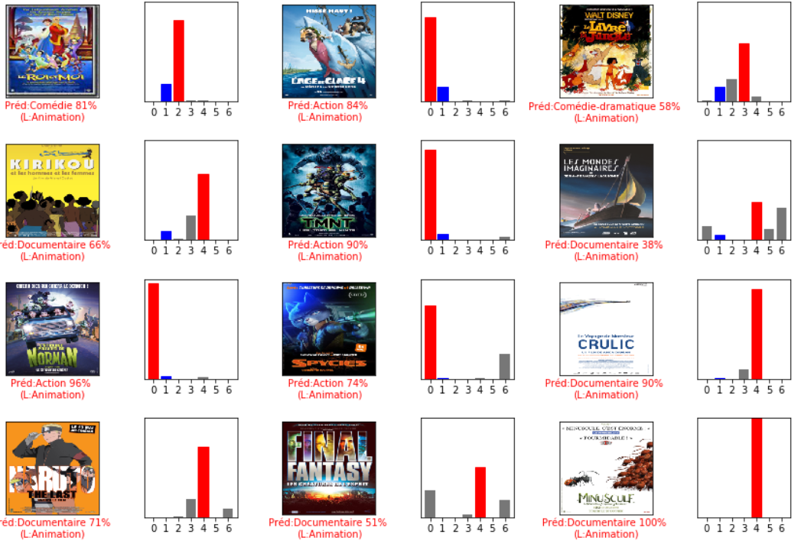
Especially because some of those posters borrow on purpose codes from other genres. It is the case for “TMNT” which takes the code of Action movies or for “Kirikou” (Documentary, with this lettering and these flat areas of color).
Similarly, the comedies with the strongest guess all respect the same codes for their poster:

But the comedies with the worst predictions are harder to guess for us too. “Free Guy” certainly borrow the codes of Action movies, “The One and Only Ivan” could be an Animation movie with the drawn gorilla on the poster, and “Reza” could easily be a documentary with this poster.
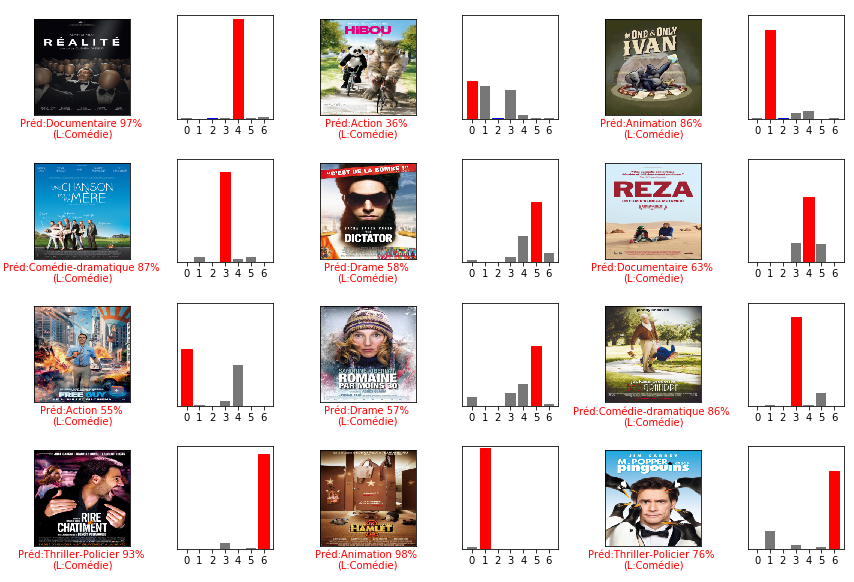
The same can be done for every genre, and this can explain a big part of the errors of the model. One also have to keep in mind that the genres of a movie are not as well defined as if an image is of a dog or a cat. Another approach could have been to do a multi label classification instead of mono label, and if you look up for similar projects it is often what is done. However, you need a larger dataset, and it is harder to determine what is expected from the model. Some movies have 3 genres, some just one. And how do you evaluate the results in that case ? We have not been able to explore these issues, and we chose to stick with the mono label classifcation, better suited for our database and the time we had for this project.
Superpixels
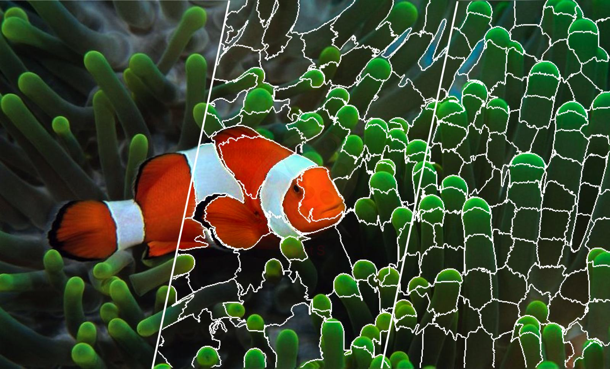
In this project we implemented in C++ an image segmentation with superpixels technique. Image segmentation with superpixels allows for a great simplification of images while keeping their visual characteristics.
The core principle is to do a k-means clustering with a well chosen distance bewteen the pixels.
SLIC
The easiest way to do that is the SLIC (Simple Linear Image Clustering) method, for which the distance for the k-means algorithm is the sum of the spatial distance and the colro distance multiplied by a chosen parameter. Typically, the distance \(d_{SLIC}\) computed bewteen one pixel and the barycenter of a cluster \(C_k\) is
\[d_{SLIC} = d_{c} + \frac{m}{S} d_{s} \]
where \(d_c\) is the euclidean distance bewteen the colors of two pixels (in the RGB or LAB space), \(d_s\) is the spatial euclidean distance, \(S = \sqrt{N/K}\) with \(N\) the number of pixels and \(K\) the number of clusters, and \(m\) a chosen coefficient.
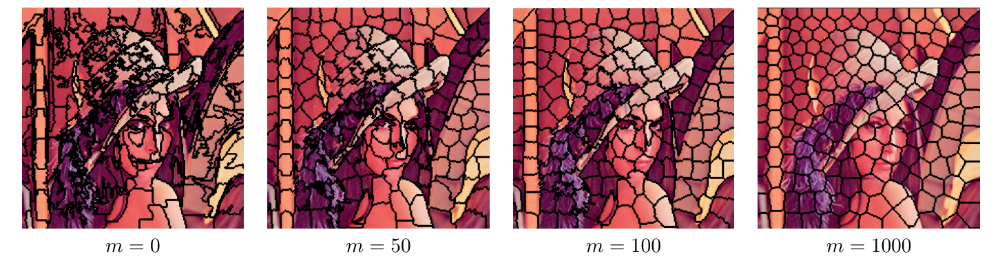
Some results for \(K = 200\)
As \(m\) goes up, the superpixels get more and more convex but they stick less and less to the colors.
SCALP
A more sophisticated way to do such segmentation is with the SCALP (Super Pixels with Contour Adherence using Linear Path) method. It takes into account a contour map of the picture for higher visual accuracy in the segmentation, by sticking more to the countours.
The spatial distance is the same but we now take into account a new distance \(d_{c}(p,C_k,P_p^k)\) on the linear path \(P_p^k\) bewteen the barycenter of the cluster \(C_k\) and the pixel \(p\), to improve the smiliraty of the colors of the pixels in one cluster. We now have:
\[ d_{c}(p,C_k,P_p^k) = \lambda d_c(p,C_k)+(1-\lambda) \frac{1}{| P_p^k |} \sum_{q \in P_p^k}d_c(q,C_k)\]
with \(\lambda\in [0,1]\) the weight of the linear path.
To ensure to stick to the shape, we consider a contour map \(\mathrm{C}\), such that \(\mathrm{C}(p)=1\) if a contour is at the pixel \(p\) and \(\mathrm{C}(p) = 0\) else. We are now going to ponder the distance by \(d_{\mathrm{C}}\), with \(\gamma \geq 0\) that gives the influence of the contour:
\[d_{\mathrm{C}}(P_p^k) = 1 + \gamma \max_{q \in P_p^k} \mathrm{C}(q) \]
The final distance to minimize is thus: \[ d_{SCALP}(p,C_k) = ( d_{c}(p,C_k,P_p^k)+\frac{m}{S}d_s(p,C_k) ) d_{\mathrm{C}}(P_p^k)\]
This distance gives a better compromise between the spatial distance and the color distance than with the SLIC method, but we need to compute the linear path each time we consider a pixel (or compute all possible path once) which makes this method a bit slower. 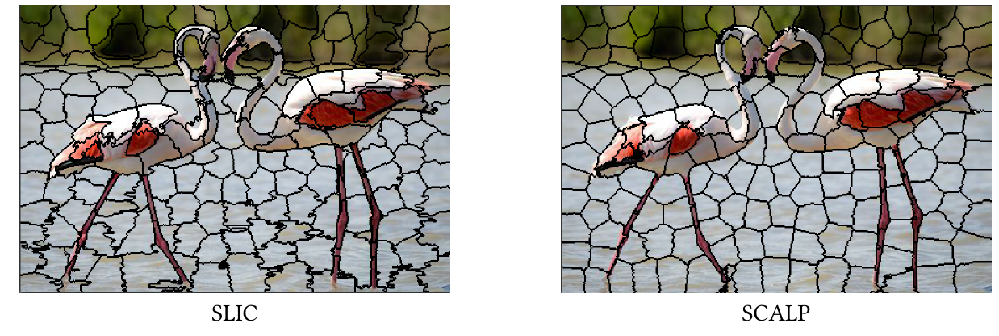
Some results with \(m = 50\) and \(K = 200\)
Inpainting
In this project we implemented in C++ an image inpainting algorithm (see Criminisi et al., 2004). This algorithm removes large objects from images, while filling the hole that is left behind in a visually plausible way by propagating texture and structure information simultaneously. The method we used is based on patch similarities within the image. The core idea is that to fill up a hole in the image using only the remaining pixels, we have to iteratively fill up the pixels along the countour of the hole by looking at which other pixel in the image they most correspond to.
First, given an input image \(I\), the user selects a target region \(\Omega\) to be removed and filled. The source region \(\Phi\) that we will use to fill \(\Omega\) can be defined as the rest of the image or just a portion of it. For each pixel \(\mathbf{p}\), \(\psi_{\mathbf{p}}\) is the patch centered on \(\mathbf{p}\), typically of size \(9 \times 9\).
For each patch \(\psi_{\mathbf{p}}\), centered on \(\mathbf{p} \in \delta \Omega\), its priority \(P(\mathbf{p})\) is \[P(\mathbf{p}) = C(\mathbf{p}) D(\mathbf{p}) \] where \(C(\mathbf{p})\) is the confidence term and \(D(\mathbf{p})\) is the data term, defined as:
\[C(\mathbf{p}) = \frac{1}{| \psi_{\mathbf{p}} |} \sum_{\mathbf{q} \in \Phi \cap \psi_{\mathbf{p}}} C(\mathbf{q}) \] \[D(\mathbf{p}) = \frac{1}{\alpha} | \nabla I^{\perp}_{\mathbf{p}} \cdot \mathbf{n_p} | \]
The confidence term is set as \(C(\mathbf{p}) = 0\) if \(\mathbf{p} \in \Omega\) and \(1\) if \(\mathbf{p} \notin \Omega\). This term mesures how confident we are of the information around \(\mathbf{p}\), given how it propagated. The goal is to fill in the first place the patches that already have a big part of them filled, and even more if they were filled early or if they were not in \(\Omega\).
As for the data term, \(\mathbf{n_p}\) is a unit vector orthogonal to \(\delta \Omega\) in the point \(\mathbf{p}\) and \(\perp\) denotes the orthogonal operator. This term boosts the priority of patches where a line of same luminosity (related to the vector \(\nabla I^\perp_{\mathbf{p}}\)) flow into.
Once every priority is computed, we choose the patch \(\psi_{\mathbf{\hat{p}}}\) with the highest priority and we look for the patch that is the most similar:
\[ \psi_{\mathbf{\hat{p}}} = \arg \min_{\psi_{\mathbf{q}} \in \Phi} d(\psi_{\mathbf{\hat{p}}}, \psi_{\mathbf{q}}) \]
where \(d\) is the sum of the euclidean distances bewteen the corresponding pixels in the patches is the RGB or LAB space. Now that a patch has been filled, before the next iteration we update the confidence terms: each pixel in \(\Omega\) and this patch get the same confidence as \(\mathbf{\hat{p}}\).
\[ \forall \mathbf{p} \in \Omega \cap \psi_{\mathbf{\hat{p}}}, C(\mathbf{p}) = C(\mathbf{\hat{p}}) \]
The domain \(\Omega\) is now smaller (\(\Omega^{t+1} = \Omega^{t} \backslash \psi_{\mathbf{\hat{p}}}\)), and we continue until \(\Omega\) is empty and the region in entirely filled. You can find below some of our results: 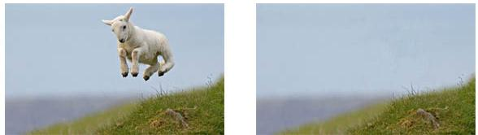
As one can predict, it works really well with a plain background. It is very easy to find similar patch when the object to remove has clear frontiers with the rest of the image, and when there is no overlapping. 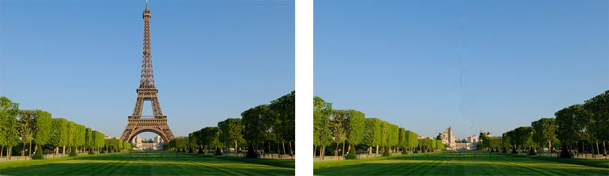
It even works when the background is more of a texture (like the flowers below). However, as you can see, if there is some overlapping (here a woman is holding the baby we chose to remove) there wil be some “leakage” (for the coat sleeves in this example).
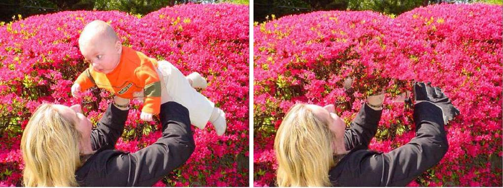